pacman::p_load(sf, spdep, tmap, tidyverse)Hands-on Exercise 5B: Local Measures of Spatial Autocorrelation
1 Overview
Local Measures of Spatial Autocorrelation (LMSA) focus on the relationships between each observation and its surroundings, rather than providing a single summary of these relationships across the map. In this sense, they are not summary statistics but scores that allow us to learn more about the spatial structure in our data. The general intuition behind the metrics however is similar to that of global ones. Some of them are even mathematically connected, where the global version can be decomposed into a collection of local ones. One such example are Local Indicators of Spatial Association (LISA). Beside LISA, Getis-Ord’s Gi-statistics will be introduce as an alternative LMSA statistics that present complementary information or allow us to obtain similar insights for geographically referenced data.
In this hands-on exercise, you will learn how to compute Local Measures of Spatial Autocorrelation (LMSA) by using sfdep package. By the end to this hands-on exercise, you will be able to:
Import geospatial data using appropriate function(s) of sf package,
Import csv file using appropriate function of readr package,
Perform relational join using appropriate join function of dplyr package,
Compute Local Indicator of Spatial Association (LISA) statistics for detecting clusters and outliers by using appropriate functions sfdep package;
Compute Getis-Ord’s Gi-statistics for detecting hot spot or/and cold spot area by using appropriate functions of sfdep package; and
Visualise the analysis output by using tmap package.
2 The Analytical Question
In spatial policy planning, one of the main development objective of the local government and planners is to ensure equal distribution of development in the province. In this study, we will apply spatial statistical methods to examine the distribution of development in Hunan Province, China, using a selected indicator (e.g., GDP per capita).
Our key questions are:
- Is development evenly distributed geographically?
- If not, is there evidence of spatial clustering?
- If clustering exists, where are these clusters located?
3 The Data
The following 2 datasets will be used in this exercise.
| Data Set | Description | Format |
|---|---|---|
| Hunan county boundary layer | Geospatial data set representing the county boundaries of Hunan | ESRI Shapefile |
| Hunan_2012.csv | Contains selected local development indicators for Hunan in 2012 | CSV |
4 Installing and Launching the R Packages
The following R packages will be used in this exercise:
| Package | Purpose | Use Case in Exercise |
|---|---|---|
| sf | Handles spatial data, particularly vector-based geospatial data. | Importing and managing township boundary data for Myanmar. |
| rgdal | Provides bindings to the Geospatial Data Abstraction Library (GDAL) for reading and writing spatial data. | Reading and writing geospatial data in various formats, including shapefiles. |
| spdep | Analyzes spatial dependence and provides tools for spatial econometrics. | Performing spatially constrained clustering and other spatial dependence analyses. |
| tidyverse | A collection of packages for data science tasks like data manipulation and visualization. | Handling attribute data, reading CSV files, and data wrangling with readr, dplyr, and ggplot2. |
| tmap | Creates static and interactive thematic maps. | Visualizing data using choropleth maps to display spatial patterns and relationships. |
| corrplot | Visualizes correlation matrices. | Creating correlation plots to explore relationships between different ICT measures. |
| ggpubr | Provides functions to create and customize ‘ggplot2’-based publication-ready plots. | Enhancing multivariate data visualizations for clearer presentation of results. |
| heatmaply | Generates interactive heatmaps. | Visualizing multivariate data through interactive heatmaps for deeper insights. |
| cluster | Performs cluster analysis. | Conducting hierarchical clustering to group similar regions based on ICT measures. |
| ClustGeo | Performs spatially constrained hierarchical clustering. | Applying spatial constraints to hierarchical clustering for identifying homogeneous regions. |
To install and load these packages, use the following code:
5 Import Data and Preparation
5.1 Import Geospatial Shapefile
Firstly, we will use st_read() of sf package to import Hunan shapefile into R. The imported shapefile will be simple features Object of sf.
hunan <- st_read(dsn = "data/geospatial",
layer = "Hunan")Reading layer `Hunan' from data source
`D:\ssinha8752\ISSS608-VAA\Hands-on_Ex\Hands-on_Ex05\data\geospatial'
using driver `ESRI Shapefile'
Simple feature collection with 88 features and 7 fields
Geometry type: POLYGON
Dimension: XY
Bounding box: xmin: 108.7831 ymin: 24.6342 xmax: 114.2544 ymax: 30.12812
Geodetic CRS: WGS 845.2 Import Aspatial csv File
Next, we will import Hunan_2012.csv into R by using read_csv() of readr package. The output is R dataframe class.
hunan2012 <- read_csv("data/aspatial/Hunan_2012.csv")Rows: 88 Columns: 29
── Column specification ────────────────────────────────────────────────────────
Delimiter: ","
chr (2): County, City
dbl (27): avg_wage, deposite, FAI, Gov_Rev, Gov_Exp, GDP, GDPPC, GIO, Loan, ...
ℹ Use `spec()` to retrieve the full column specification for this data.
ℹ Specify the column types or set `show_col_types = FALSE` to quiet this message.5.3 Perform Relational Join
Then, we will perform a left_join() to update the attribute table of hunan’s SpatialPolygonsDataFrame with the attribute fields of hunan2012 dataframe.
hunan <- left_join(hunan,hunan2012) %>%
select(1:4, 7, 15)Joining with `by = join_by(County)`5.4 Visualizing Regional Development Indicator
Now to build two choropleth maps by using equal interval (i.e equal) and quantile (i.e. quantile) classification methods, and to plot both maps next to each other by using tmap_arrange().
equal <- tm_shape(hunan) +
tm_polygons(fill = "GDPPC",
fill.scale = tm_scale_intervals(
style = "equal",
n = 5,
values = "brewer.blues"),
fill.legend = tm_legend(
title = "GDPPC",
position = tm_pos_in(
"left", "bottom"))) +
tm_borders(fill_alpha = 0.5) +
tm_title("Equal interval classification")
quantile <- tm_shape(hunan) +
tm_polygons(fill = "GDPPC",
fill.scale = tm_scale_intervals(
style = "quantile",
n = 5,
values = "brewer.blues"),
fill.legend = tm_legend(
title = "GDPPC",
position = tm_pos_in(
"left", "bottom"))) +
tm_borders(fill_alpha = 0.5) +
tm_title("Quantile interval classification")
tmap_arrange(equal,
quantile,
asp=1,
ncol=2)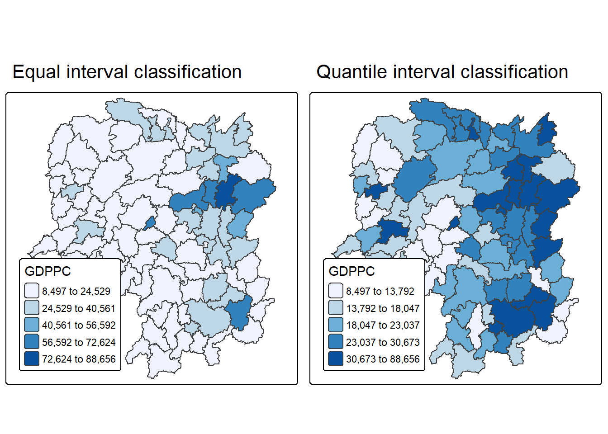
6 Local Indicators of Spatial Association(LISA)
Local Indicators of Spatial Association (LISA) are statistics used to identify clusters and outliers in the spatial distribution of a variable. For example, if we are analyzing the GDP per capita in Hunan Province, China, LISA can help detect areas (counties) where GDP values are significantly higher or lower than expected by chance. This means that these values deviate from what would be seen in a random distribution across space.
In this section, we will apply appropriate Local Indicators for Spatial Association (LISA), particularly the Local Moran’s I statistic, to identify clusters and outliers in the 2012 GDP per capita data for Hunan Province.
6.1 Computing Contiguity Spatial Weights
Before we can compute the global spatial autocorrelation statistics, we need to construct a spatial weights of the study area. The spatial weights is used to define the neighbourhood relationships between the geographical units (i.e. county) in the study area.
In spatial data analysis using the sfdep package, the process of constructing spatial weight matrices begins with the st_contiguity() function. This function identifies neighboring polygons based on shared boundaries and allows the user to specify the type of contiguity—Queen or Rook—through the queen argument. By default, it uses Queen contiguity, meaning any shared point or edge qualifies two regions as neighbors unless explicitly set to queen = FALSE. Once the neighbor list is created, the st_weights() function is used to compute spatial weights, which quantify the influence of neighboring regions in spatial modeling.
st_contiguity()Function:- Computes contiguity-based neighbor lists.
- Uses shared boundaries to define neighbors.
queen = TRUE(default): Queen contiguity (shared point or edge).queen = FALSE: Rook contiguity (shared edge only).
st_weights()Function:- Converts neighbor list (
nb) into spatial weights. - Arguments:
nb: Neighbor list object fromst_neighbors().style: Defines weight calculation method:"W": Row-standardized (default)."B": Binary coding."C": Global standardization."U": Global standardization divided by number of neighbors."minmax": Min-max normalization."S": Variance-stabilizing (Tiefelsdorf et al., 1999).
allow_zero: IfTRUE, assigns zero to zones with no neighbors.
- Converts neighbor list (
library(sfdep)
wm_q <- hunan %>%
mutate(nb = st_contiguity(geometry),
wt = st_weights(
nb, style = "W"),
.before = 1)summary(wm_q$nb)Neighbour list object:
Number of regions: 88
Number of nonzero links: 448
Percentage nonzero weights: 5.785124
Average number of links: 5.090909
Link number distribution:
1 2 3 4 5 6 7 8 9 11
2 2 12 16 24 14 11 4 2 1
2 least connected regions:
30 65 with 1 link
1 most connected region:
85 with 11 linksThe summary report above shows that there are 88 area units in Hunan. The most connected area unit has 11 neighbours. There are two area units with only one neighbours.
6.2 Row-standardised Weights Matrix
To assign spatial weights to neighboring polygons, the style = “W” method is commonly used, which distributes equal weight by assigning each neighbor a value of . This approach is intuitive and straightforward for summarizing neighboring values like income, but it can introduce bias for edge polygons that have fewer neighbors, potentially distorting spatial autocorrelation. Despite this limitation, style = “W” is used here for simplicity, though more robust alternatives like style = “B” exist.
Tip
For simplicity, we use the style=“W” option in this example, but keep in mind that other, potentially more accurate methods are available, such as style=“B”.
Tip
The input of
nb2listw()must be an object of class nb. The syntax of the function has two major arguments, namely style and zero.poly.style can take values “W”, “B”, “C”, “U”, “minmax” and “S”. B is the basic binary coding, W is row standardised (sums over all links to n), C is globally standardised (sums over all links to n), U is equal to C divided by the number of neighbours (sums over all links to unity), while S is the variance-stabilizing coding scheme proposed by Tiefelsdorf et al. 1999, p. 167-168 (sums over all links to n).
The zero.policy=TRUE option allows for lists of non-neighbors. This should be used with caution since the user may not be aware of missing neighbors in their dataset however, a zero.policy of FALSE would return an error.
6.3 Computing Local Moran’s I
To compute local Moran’s I, the localmoran() function of spdep will be used. It computes Ii values, given a set of zi values and a listw object providing neighbour weighting information for the polygon associated with the zi values.
Now, we compute local Moran’s I of GDPPC2012 at the county level.
lisa <- wm_q %>%
mutate(local_moran = local_moran(
GDPPC, nb, wt, nsim = 99),
.before = 1) %>%
unnest(local_moran)
Tip
localmoran() function returns a matrix of values whose columns are:
- Ii: the local Moran’s I statistics
- E.Ii: the expectation of local moran statistic under the randomisation hypothesis
- Var.Ii: the variance of local moran statistic under the randomisation hypothesis
- Z.Ii:the standard deviate of local moran statistic
- Pr(): the p-value of local moran statistic
Next, we list the content of the local Moran matrix derived by using printCoefmat().
glimpse(lisa)Rows: 88
Columns: 21
$ ii <dbl> -1.468468e-03, 2.587817e-02, -1.198765e-02, 1.022468e-03,…
$ eii <dbl> -2.978856e-03, -3.059861e-03, -5.007384e-02, -1.235785e-0…
$ var_ii <dbl> 7.392761e-04, 1.095661e-02, 8.216017e-02, 3.700893e-06, 1…
$ z_ii <dbl> 0.05555015, 0.27645917, 0.13287304, 0.59572914, 0.4190825…
$ p_ii <dbl> 9.557002e-01, 7.821954e-01, 8.942938e-01, 5.513562e-01, 6…
$ p_ii_sim <dbl> 0.78, 1.00, 0.72, 0.62, 0.62, 0.86, 0.04, 0.06, 0.02, 0.2…
$ p_folded_sim <dbl> 0.39, 0.50, 0.36, 0.31, 0.31, 0.43, 0.02, 0.03, 0.01, 0.1…
$ skewness <dbl> -1.4635639, -0.8413750, 0.8119844, 0.3664154, 1.0689240, …
$ kurtosis <dbl> 3.3533741, 0.2413665, 0.2255343, -0.2958679, 1.0379487, 0…
$ mean <fct> Low-High, Low-Low, High-Low, High-High, High-High, High-L…
$ median <fct> High-High, High-High, High-High, High-High, High-High, Hi…
$ pysal <fct> Low-High, Low-Low, High-Low, High-High, High-High, High-L…
$ nb <nb> <2, 3, 4, 57, 85>, <1, 57, 58, 78, 85>, <1, 4, 5, 85>, <1,…
$ wt <list> <0.2, 0.2, 0.2, 0.2, 0.2>, <0.2, 0.2, 0.2, 0.2, 0.2>, <0…
$ NAME_2 <chr> "Changde", "Changde", "Changde", "Changde", "Changde", "C…
$ ID_3 <int> 21098, 21100, 21101, 21102, 21103, 21104, 21109, 21110, 2…
$ NAME_3 <chr> "Anxiang", "Hanshou", "Jinshi", "Li", "Linli", "Shimen", …
$ ENGTYPE_3 <chr> "County", "County", "County City", "County", "County", "C…
$ County <chr> "Anxiang", "Hanshou", "Jinshi", "Li", "Linli", "Shimen", …
$ GDPPC <dbl> 23667, 20981, 34592, 24473, 25554, 27137, 63118, 62202, 7…
$ geometry <POLYGON [°]> POLYGON ((112.0625 29.75523..., POLYGON ((112.228…6.3.1 Mapping the Local Moran’s I
6.3.2 Mapping local Moran’s I values
We can plot the local Moran’s I values using choropleth mapping functions of tmap package.
tm_shape(lisa) +
tm_polygons(fill = "ii",
fill.scale = tm_scale_intervals(
style = "pretty",
n = 5,
values = "brewer.RdBu"),
fill.legend = tm_legend(
title = "Local Morans'I",
position = tm_pos_out())) +
tm_borders(fill_alpha = 0.5) +
tm_title("Loal Morans'I of GDPPC (Queen's method)")[scale] tm_polygons:() the data variable assigned to 'fill' contains positive and negative values, so midpoint is set to 0. Set 'midpoint = NA' in 'fill.scale = tm_scale_intervals(<HERE>)' to use all visual values (e.g. colors)[cols4all] color palettes: use palettes from the R package cols4all. Run
`cols4all::c4a_gui()` to explore them. The old palette name "brewer.RdBu" is
named "rd_bu" (in long format "brewer.rd_bu")
[plot mode] fit legend/component: Some legend items or map compoments do not
fit well, and are therefore rescaled.
ℹ Set the tmap option `component.autoscale = FALSE` to disable rescaling.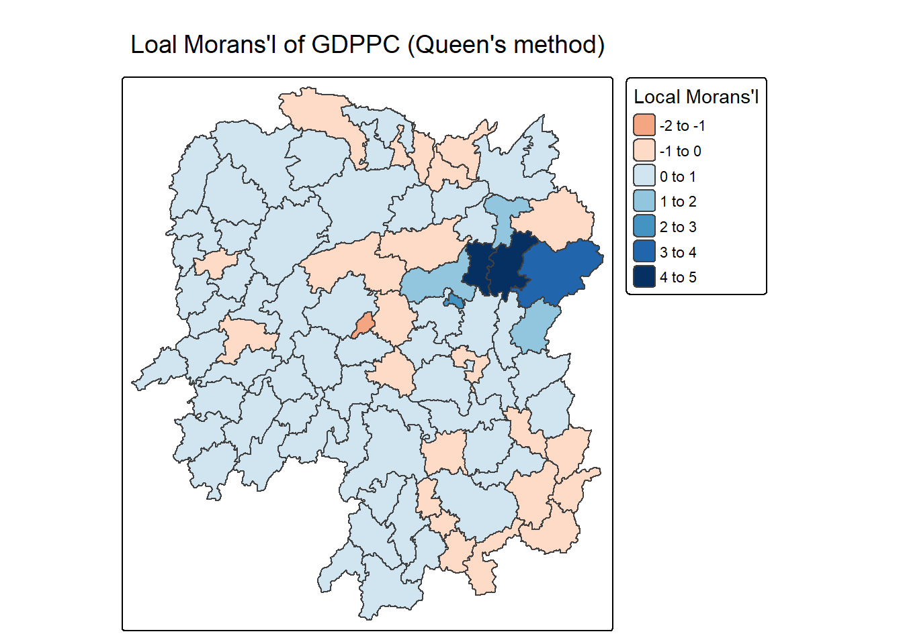
6.3.3 Mapping local Moran’s I p-values
The choropleth shows there is evidence for both positive and negative Ii values. However, it is useful to consider the p-values for each of these values
The code block below produce a choropleth map of Moran’s I p-values by using functions of tmap package.
tm_shape(lisa) +
tm_polygons(fill = "p_ii",
fill.scale = tm_scale_intervals(
breaks = c(-Inf, 0.001, 0.01, 0.05, 0.1, Inf),
values = "-brewer.Reds"),
fill.legend = tm_legend(
title = "p-value",
position = tm_pos_out())) +
tm_borders(fill_alpha = 0.5) +
tm_title("p-values of Loal Moran's I of GDPPC (Queen's method)")[cols4all] color palettes: use palettes from the R package cols4all. Run
`cols4all::c4a_gui()` to explore them. The old palette name "-brewer.Reds" is
named "reds" (in long format "brewer.reds")
[plot mode] fit legend/component: Some legend items or map compoments do not
fit well, and are therefore rescaled.
ℹ Set the tmap option `component.autoscale = FALSE` to disable rescaling.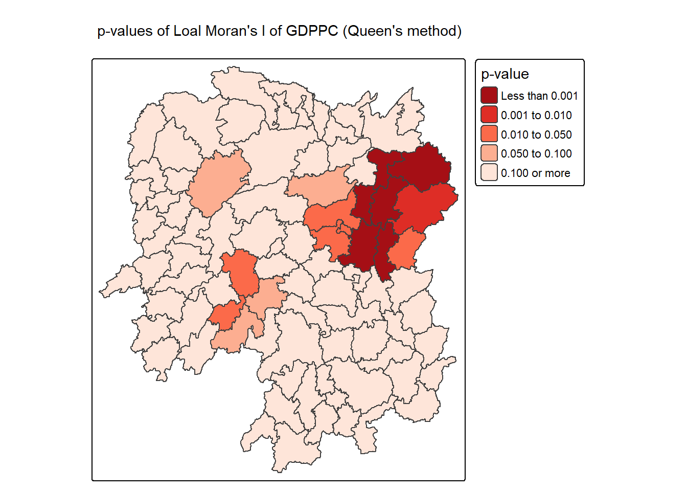
6.3.4 Mapping both local Moran’s I values and p-values
For effective interpretation, it is better to plot both the local Moran’s I values map and its corresponding p-values map next to each other.
The code block below will be used to create such visualisation.
ii.map <- tm_shape(lisa) +
tm_polygons(fill = "ii",
fill.scale = tm_scale_intervals(
style = "pretty",
n = 5,
values = "brewer.RdBu"),
fill.legend = tm_legend(
title = "Local Moran's I",
position = tm_pos_in(
"left", "bottom"))) +
tm_borders(fill_alpha = 0.5) +
tm_title("Loal Moran's I of GDPPC (Queen's method)")
p_ii.map <- tm_shape(lisa) +
tm_polygons(fill = "p_ii",
fill.scale = tm_scale_intervals(
breaks = c(-Inf, 0.001, 0.01, 0.05, 0.1, Inf),
values = "-brewer.Reds"),
fill.legend = tm_legend(
title = "p-value",
position = tm_pos_in("left", "bottom")
)) +
tm_borders(fill_alpha = 0.5) +
tm_title("p-values of Loal Moran's I of GDPPC (Queen's method)")
tmap_arrange(ii.map, p_ii.map, asp=1, ncol=2)[scale] tm_polygons:() the data variable assigned to 'fill' contains positive and negative values, so midpoint is set to 0. Set 'midpoint = NA' in 'fill.scale = tm_scale_intervals(<HERE>)' to use all visual values (e.g. colors)[cols4all] color palettes: use palettes from the R package cols4all. Run
`cols4all::c4a_gui()` to explore them. The old palette name "brewer.RdBu" is
named "rd_bu" (in long format "brewer.rd_bu")
[plot mode] fit legend/component: Some legend items or map compoments do not
fit well, and are therefore rescaled.
ℹ Set the tmap option `component.autoscale = FALSE` to disable rescaling.
[cols4all] color palettes: use palettes from the R package cols4all. Run
`cols4all::c4a_gui()` to explore them. The old palette name "-brewer.Reds" is
named "reds" (in long format "brewer.reds")
[plot mode] fit legend/component: Some legend items or map compoments do not
fit well, and are therefore rescaled.
ℹ Set the tmap option `component.autoscale = FALSE` to disable rescaling.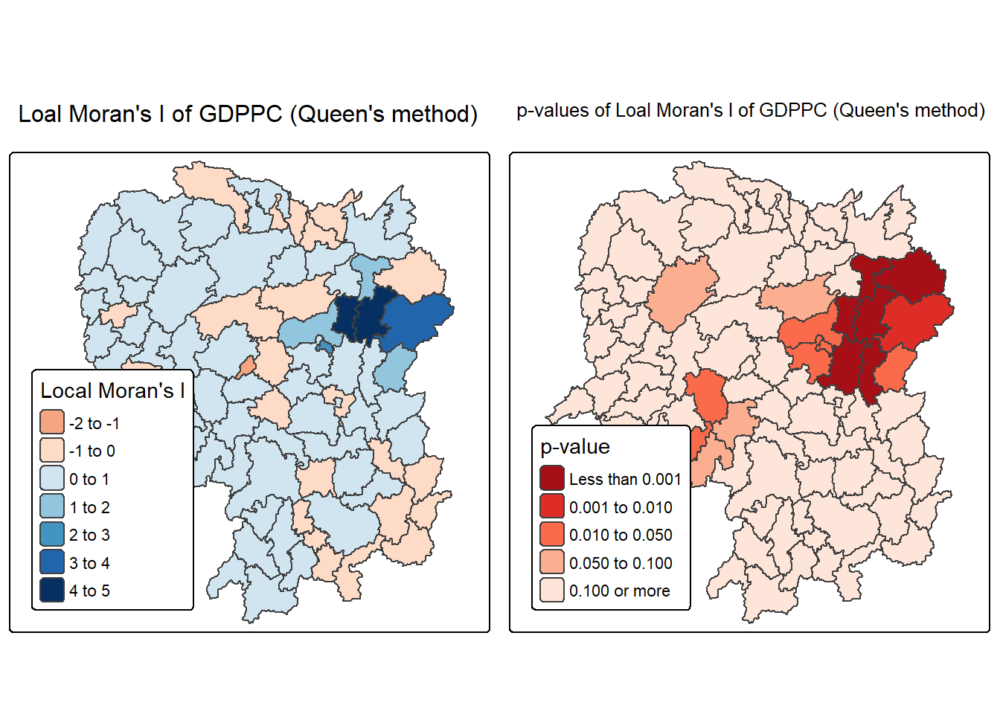
Note
The plot above consists of two maps: one showing the Local Moran’s I statistics (Ii) and the other displaying the corresponding p-values for Local Moran’s I statistics.
Left Plot: Local Moran’s I Statistics
Color Scale: - The color scale ranges from light yellow to dark green, representing different ranges of Local Moran’s I values (Ii).
Dark BLue Areas: Represent counties with high positive Local Moran’s I values (between 3 and 5). These areas show strong positive spatial autocorrelation, indicating clusters where counties have similar high GDP per capita values compared to their neighbors.
Light Yellow Areas: Represent counties with lower Local Moran’s I values (around 0 to 1). These areas have weaker spatial autocorrelation, suggesting less significant clustering or similarity with their neighbors.
Orange Areas: Represent negative Local Moran’s I values (between -2 to 0). These are areas where counties have significantly different GDP per capita values from their neighbors (spatial outliers).
Right Plot: Local Moran’s I p-values
Color Scale: - The color scale ranges from light blue to dark blue, representing different ranges of p-values for Local Moran’s I statistics.
Dark Red Areas: Represent counties with very low p-values (less than 0.001), indicating that the observed spatial clustering is statistically significant at a very high confidence level.
Orange Areas: Represent counties with higher p-values (e.g., between 0.01 and 0.10), suggesting that the clustering is less statistically significant.
Light Orange Areas: Represent counties with p-values greater than 0.10, indicating that there is no statistically significant spatial autocorrelation.
Observations:
- The map shows that the central-eastern region (around the Changsha county) has several dark blue counties with very low p-values, indicating strong evidence of significant spatial clustering of similar GDP per capita values.
7 Creating and Visualizing LISA Map
Visualizing LISA involves creating maps that highlight significant spatial patterns, such as hot spots (high values clustered together) and cold spots (low values clustered together), as well as identifying spatial outliers. Common methods include choropleth maps showing LISA values, Moran scatterplots which depict local spatial autocorrelation for individual locations, and hot spot analysis maps.
The LISA Cluster Map shows the significant locations color coded by type of spatial autocorrelation. The first step before we can generate the LISA cluster map is to plot the Moran scatterplot.
7.1 Plotting Moran scatterplot
The Moran scatterplot is an illustration of the relationship between the values of the chosen attribute at each location and the average value of the same attribute at neighboring locations.
In the code chunk below, st_lag() of sfdep package is used to calculates the spatial lag of GDPPC given a neighbor (i.e. nb) and weights list (i.e. wt).
lisa <- lisa %>%
mutate(lag_GDPPC = st_lag(
GDPPC, nb, wt),
.before = 1) %>%
unnest(lag_GDPPC)Then, the code chunk below is used to plot the Moran Scatterplot of GDPPC against its spatial lag version as shown in the code cunk below.
ggplot(data = lisa,
aes(x = GDPPC,
y = lag_GDPPC)) +
geom_point() +
geom_smooth(method = "lm",
se = FALSE,
color = "red") +
labs(x = "GDPPC",
y = "Spatial Lag of GDPPC",
title = "Moran Scatterplot") +
theme_minimal()`geom_smooth()` using formula = 'y ~ x'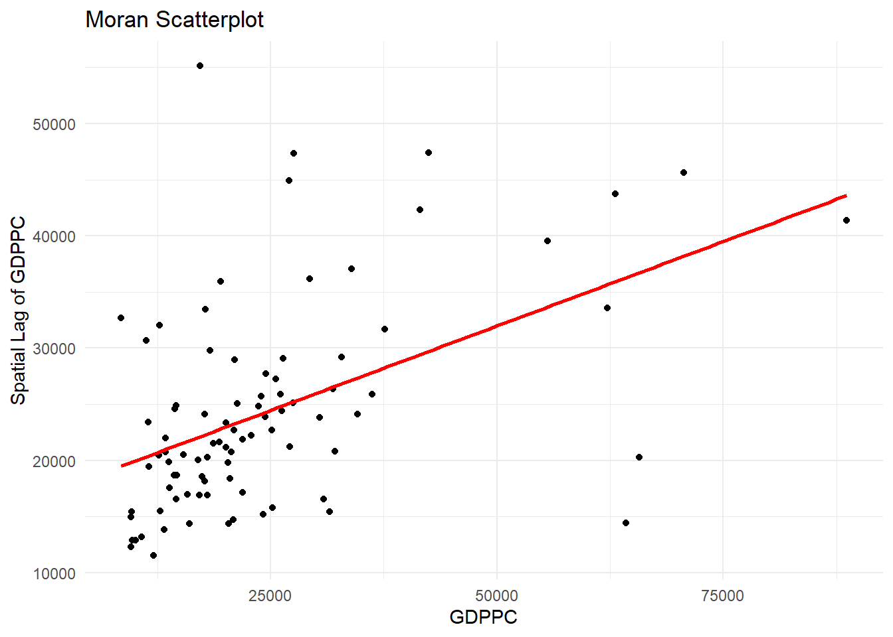
The Moran Scatterplot above is not very intuitive. To support effective visual communication, the code chunk below is used.
ggplot(data = lisa,
aes(x = GDPPC,
y = lag_GDPPC,
color = mean)) +
geom_point(size = 2) +
geom_smooth(method = "lm",
se = FALSE,
color = "black") +
geom_hline(yintercept=mean(lisa$lag_GDPPC), lty=2) +
geom_vline(xintercept=mean(lisa$GDPPC), lty=2) +
scale_color_manual(
values = c("High-High" = "red",
"Low-Low" = "blue",
"Low-High" = "lightblue",
"High-Low" = "pink")) +
labs(x = "GDPPC",
y = "Spatial Lag of GDPPC",
title = "Moran Scatterplot with LISA Quadrants") +
theme_minimal()`geom_smooth()` using formula = 'y ~ x'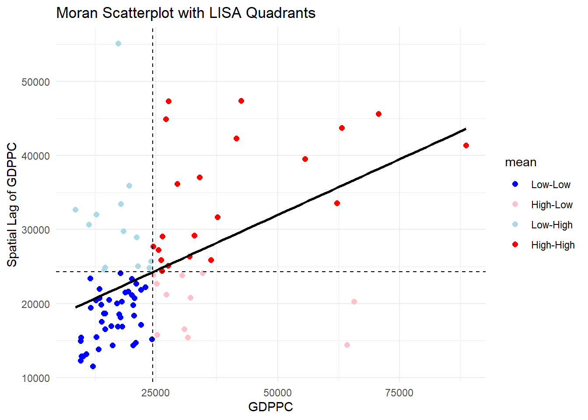
Note
Observations The plot is split in 4 quadrants. The top right corner belongs to areas that have high GDPPC and are surrounded by other areas that have the average level of GDPPC. This are the high-high locations in the lesson slide, recall:
7.2 Plotting Moran scatterplot with Standardised Variable
To plot Moran scatterplot with standardised variable:
Use
scale()to center and scale the variable. Centering is done by subtracting the mean (omitting NAs) the corresponding columns, and scaling is done by dividing the (centered) variable by their standard deviations.Use
as.vector()to ensure that the standardized output is treated as a vector, which is necessary for proper mapping into the output data frame.Plot the Moran scatterplot
lisa <- lisa %>%
mutate(z_GDPPC = scale(GDPPC),
z_lag_GDPPC = scale(lag_GDPPC),
.before = 1)ggplot(data = lisa,
aes(x = z_GDPPC,
y = z_lag_GDPPC,
color = mean)) +
geom_point(size = 2) +
geom_smooth(method = "lm",
se = FALSE,
color = "black") +
geom_hline(yintercept=mean(lisa$z_lag_GDPPC), lty=2) +
geom_vline(xintercept=mean(lisa$z_GDPPC), lty=2) +
scale_color_manual(
values = c("High-High" = "red",
"Low-Low" = "blue",
"Low-High" = "lightblue",
"High-Low" = "pink")) +
labs(x = "Standardised GDPPC",
y = "Standardised Spatial Lag of GDPPC",
title = "Standardised Moran Scatterplot with LISA Quadrants") +
theme_minimal()`geom_smooth()` using formula = 'y ~ x'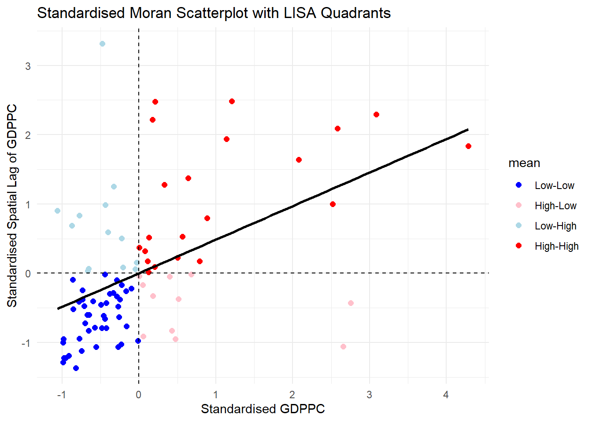
Note
Note that the plot is similar to the previous plot. After scaling it, the cut off axis for x and y-axis is at 0.
7.3 Preparing LISA map classes
The code block below show the steps to prepare a LISA cluster map.
Set a statistical significance level (alpha value) for the local Moran.
signif <- 0.057.4 Plotting LISA map
Now, we can build the LISA map:
lisa <- lisa %>%
mutate(
LISA_cluster = ifelse(
p_ii < 0.05,
as.character(mean),
"Insignificant"),
LISA_cluster = factor(
LISA_cluster,
levels = c("Insignificant", "Low-Low", "Low-High", "High-Low", "High-High")
)
)For effective interpretation, it is better to plot both the local Moran’s I values map and its corresponding p-values map next to each other.
To create such visualisation:
lisa_map <- tm_shape(lisa) +
tm_polygons(
fill = "LISA_cluster",
fill.scale = tm_scale_categorical(
values = c(
"grey80", # Insignificant
"blue", # Low-Low
"lightblue", # Low-High
"pink", # High-Low
"red" # High-High
)
),
fill.legend = tm_legend(
title = "LISA Cluster",
position = tm_pos_in("left", "bottom"))
) +
tm_borders() +
tm_title("Local Moran's I Clusters (p < 0.05)")
lisa_map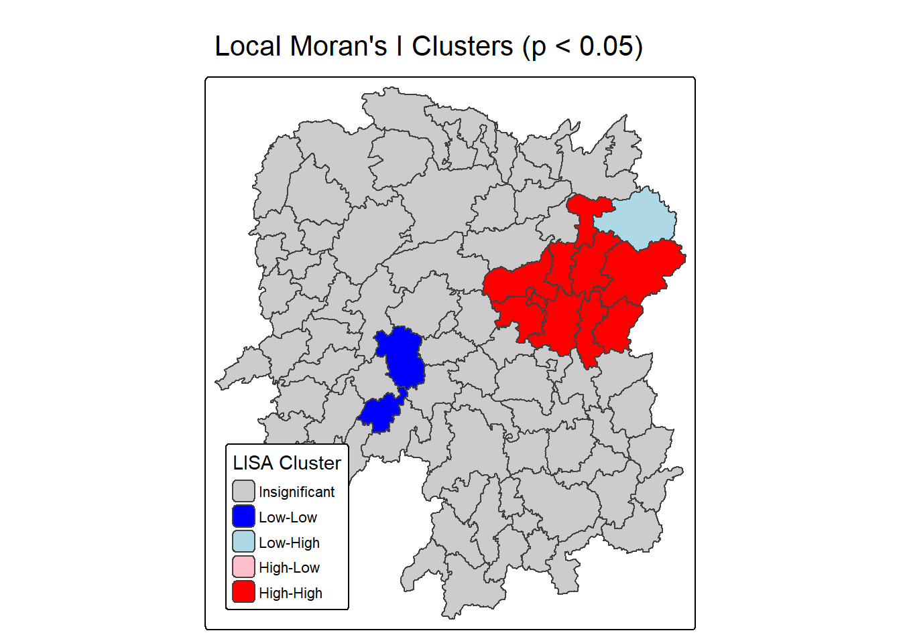
ii.map <- tm_shape(lisa) +
tm_polygons(fill = "ii",
fill.scale = tm_scale_intervals(
style = "pretty",
n = 5,
values = "brewer.RdBu"),
fill.legend = tm_legend(
title = "Local Moran's I",
position = tm_pos_in(
"left", "bottom"))) +
tm_borders(fill_alpha = 0.5) +
tm_title("Loal Moran's I of GDPPC (Queen's method)")
p_iii.map <- lisa_map <- tm_shape(lisa) +
tm_polygons(
fill = "LISA_cluster",
fill.scale = tm_scale_categorical(
values = c(
"grey80", # Insignificant
"blue", # Low-Low
"lightblue", # Low-High
"pink", # High-Low
"red" # High-High
)
),
fill.legend = tm_legend(
title = "LISA Cluster",
position = tm_pos_in("left", "bottom"))
) +
tm_borders() +
tm_title("Local Moran's I Clusters (p < 0.05)")
tmap_arrange(ii.map, p_iii.map, asp=1, ncol=2)[scale] tm_polygons:() the data variable assigned to 'fill' contains positive and negative values, so midpoint is set to 0. Set 'midpoint = NA' in 'fill.scale = tm_scale_intervals(<HERE>)' to use all visual values (e.g. colors)[cols4all] color palettes: use palettes from the R package cols4all. Run
`cols4all::c4a_gui()` to explore them. The old palette name "brewer.RdBu" is
named "rd_bu" (in long format "brewer.rd_bu")
[plot mode] fit legend/component: Some legend items or map compoments do not
fit well, and are therefore rescaled.
ℹ Set the tmap option `component.autoscale = FALSE` to disable rescaling.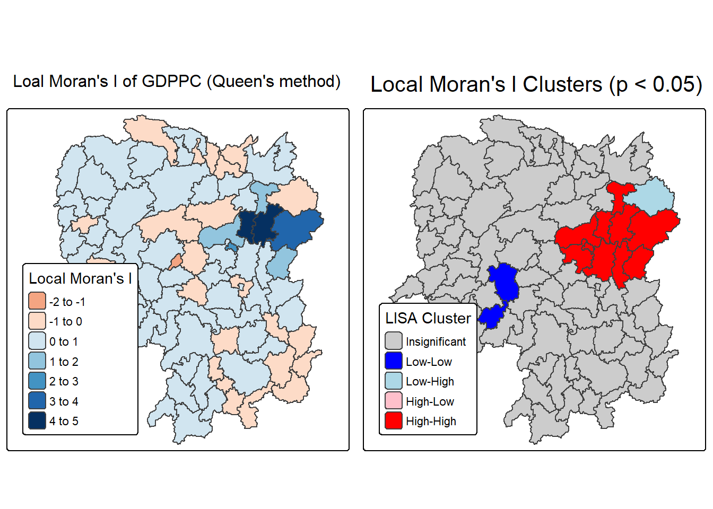
Note
Question: What statistical observations can you draw from the LISA map above?
The left map titled “Local Moran’s I of GDPPC (Queen’s method)” visualizes the degree of spatial autocorrelation in GDP per capita across administrative regions using Queen contiguity. Each area is shaded based on its Local Moran’s I value, which quantifies how similar a region’s GDPPC is to its neighbors. Positive values (darker shades) indicate clustering of similar high or low values—suggesting that regions with high GDPPC are surrounded by others with similarly high values, and likewise for low GDPPC. Negative or lighter values suggest spatial outliers, where a region’s GDPPC differs significantly from its neighbors. This map helps identify where economic patterns are spatially reinforced or disrupted.
The right map titled “Local Moran’s I Clusters (p < 0.05)” highlights statistically significant clusters based on the Local Moran’s I values, using a p-value threshold of 0.05. It categorizes regions into five types: High-High (red) and Low-Low (blue) clusters show strong positive spatial autocorrelation, where similar values are grouped together. High-Low (light pink) and Low-High (light blue) areas are spatial outliers, indicating regions that contrast with their surroundings. Gray areas are not statistically significant, meaning no clear spatial pattern was detected. This map is especially useful for identifying priority zones for economic policy, as it distinguishes between entrenched clusters and anomalous regions.
8 Hot Spot and Cold Spot Area Analysis
Hot spot and cold spot analysis is a spatial statistical technique used to detect significant clusters of high or low values in geographically referenced data, such as GDP per capita (GDPPC). These patterns help reveal areas where values are more densely grouped than expected by chance, offering insights into regional disparities or concentrations. In the case of Hunan Province, China, this method highlights zones of economic intensity or deprivation.
Hot spots refer to regions where high values are not only present but also surrounded by other high-value areas. This concept is widely used across disciplines to identify areas of elevated activity or performance. In economic terms, hot spots in GDPPC suggest localized prosperity—zones with significantly higher income levels than their neighbors.
Cold spots, on the other hand, represent clusters of low values surrounded by similarly low-value regions. These areas may indicate persistent underdevelopment or economic stagnation. To assess whether these clusters are statistically meaningful, the analysis employs the Getis-Ord Gi* statistic, which tests whether observed patterns deviate from randomness.
Steps in Hot Spot & Cold Spot Analysis (HCSA)
Derive spatial weight matrix
Establish spatial relationships between regions.Compute Gi* statistics
Measure local clustering of high or low values.Map Gi* statistics
Visualize hot and cold spots geographically.Communicate results
Interpret and share findings for decision-making or policy.
8.1 Deriving Distance-based Weight Matrix
First, we need to define a new set of neighbors. Unlike spatial autocorrelation, which considers units sharing borders, the Getis-Ord method defines neighbors based on distance.
There are 3 types of distance-based proximity matrices:
- Fixed Distance Weight Matrix: Neighbors are defined within a fixed distance.
- Adaptive Distance Weight Matrix: Neighbors are defined based on a varying distance that adapts to include a specified number of nearest neighbors.
- Inverse distance weights : - Assigns weights that decrease with increasing distance. Closer neighbors exert more influence, capturing gradual spatial decay.
8.1.1 Computing Fixed Distance Weight Matrix
compute fixed distance weight matrix by using st_dist_band() and st_weights() of sfdep package.
Firstly, we need to determine the upper limit for distance band by using the steps below:
ct <- critical_threshold(st_geometry(hunan))Warning in st_point_on_surface.sfc(geometry): st_point_on_surface may not give
correct results for longitude/latitude dataWarning in spdep::knn2nb(spdep::knearneigh(pnts, k)): neighbour object has 27
sub-graphsct[1] 62.82614The summary report shows that the largest first nearest neighbour distance is 60.80 km, so using this as the upper threshold gives certainty that all units will have at least one neighbour.
Using the critical threshold value computed above, code chunk below is used to compute the fixed distance weight.
hunan_fdw <- hunan %>%
mutate(nb = include_self(
st_dist_band(
st_geometry(geometry),
upper = ct)),
wt = st_weights(nb,
style = "W"),
.before = 1) ! Polygon provided. Using point on surface.Warning: There was 1 warning in `stopifnot()`.
ℹ In argument: `nb = include_self(st_dist_band(st_geometry(geometry), upper =
ct))`.
Caused by warning in `st_point_on_surface.sfc()`:
! st_point_on_surface may not give correct results for longitude/latitude dataNoted that for Gi* include_self() must be used to endure that wii(d) is not equal to c.
8.1.2 Computing adaptive distance weight matrix
One of the characteristics of fixed distance weight matrix is that more densely settled areas (usually the urban areas) tend to have more neighbours and the less densely settled areas (usually the rural counties) tend to have lesser neighbours. Having many neighbours smoothes the neighbour relationship across more neighbours.
It is possible to control the numbers of neighbours directly using k-nearest neighbours, either accepting asymmetric neighbours or imposing symmetry as shown in the code block below.
computing fixed distance weight matrix by using st_dist_band() and st_weights() of sfdep package.
hunan_adw <- hunan %>%
mutate(nb = include_self(
st_knn(
st_geometry(geometry),
k = 6)),
wt = st_weights(
nb, style = "W"),
.before = 1)! Polygon provided. Using point on surface.Warning: There was 1 warning in `stopifnot()`.
ℹ In argument: `nb = include_self(st_knn(st_geometry(geometry), k = 6))`.
Caused by warning in `st_point_on_surface.sfc()`:
! st_point_on_surface may not give correct results for longitude/latitude data8.2 Computing Local Gi*
Local Gi* (pronounced “G-i-star”) is a Getis-Ord statistic used in spatial analysis to identify statistically significant hot spots and cold spots of high or low attribute values within a dataset. It measures the spatial clustering of values by comparing the total value within a specified neighborhood to the global total, producing a Z-score and p-value for each location to determine the likelihood that the observed pattern is not due to random chance.
In this sub-section, you will gain hands-on experience on performing Gi* analysis by using local_gstar_perm() of sfdep package.
HCSA_fdw <- hunan_fdw %>%
mutate(
gistar = local_gstar_perm(
GDPPC, nb, wt, nsim = 99),
.before = 1) %>%
unnest(gistar)8.3 Preparing and Visualising HCSA Map
8.3.1 Mapping Gi* with fix distance weights
In the code chunk below, thematic mapping functions of tmaps are used to prepare a choropleth map showing the distribution of Gi* values.
tm_shape(HCSA_fdw) +
tm_polygons(fill = "gi_star",
fill.scale = tm_scale_intervals(
style = "pretty",
n = 6,
values = "brewer.rd_bu"),
fill.legend = tm_legend(
title = "Gi*",
position = tm_pos_out())) +
tm_borders(fill_alpha = 0.5) +
tm_title("Gi* of GDPPC (Fixed Bandwidth d = 60799.91m)")[scale] tm_polygons:() the data variable assigned to 'fill' contains positive and negative values, so midpoint is set to 0. Set 'midpoint = NA' in 'fill.scale = tm_scale_intervals(<HERE>)' to use all visual values (e.g. colors)[plot mode] fit legend/component: Some legend items or map compoments do not
fit well, and are therefore rescaled.
ℹ Set the tmap option `component.autoscale = FALSE` to disable rescaling.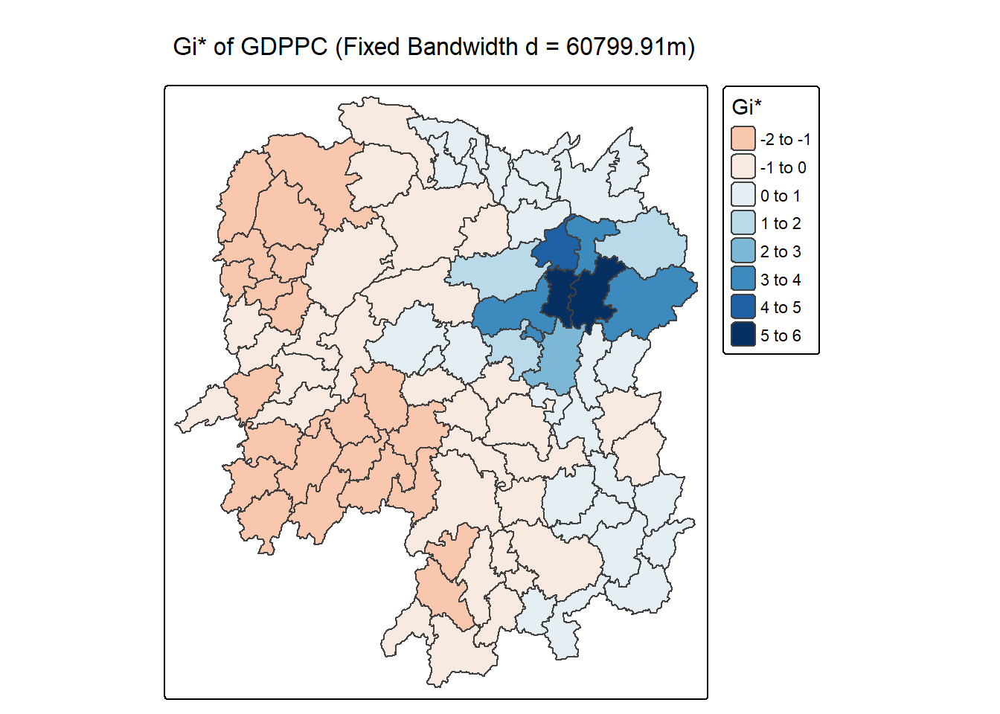
8.3.2 Mapping local Gi* p-values
The choropleth shows there is evidence for both positive and negative Ii values. However, it is useful to consider the p-values for each of these values, as consider above.
The code chunk below plots a choropleth map of p-values of Gi* by using functions of tmap package.
tm_shape(HCSA_fdw) +
tm_polygons(fill = "p_sim",
fill.scale = tm_scale_intervals(
breaks = c(-Inf, 0.001, 0.01, 0.05, 0.1, Inf),
values = "-brewer.Reds"),
fill.legend = tm_legend(
title = "simulated p-value",
position = tm_pos_out())) +
tm_borders(fill_alpha = 0.5) +
tm_title("p-values of local Gi* of GDPPC (Fixed distance)")[cols4all] color palettes: use palettes from the R package cols4all. Run
`cols4all::c4a_gui()` to explore them. The old palette name "-brewer.Reds" is
named "reds" (in long format "brewer.reds")
[plot mode] fit legend/component: Some legend items or map compoments do not
fit well, and are therefore rescaled.
ℹ Set the tmap option `component.autoscale = FALSE` to disable rescaling.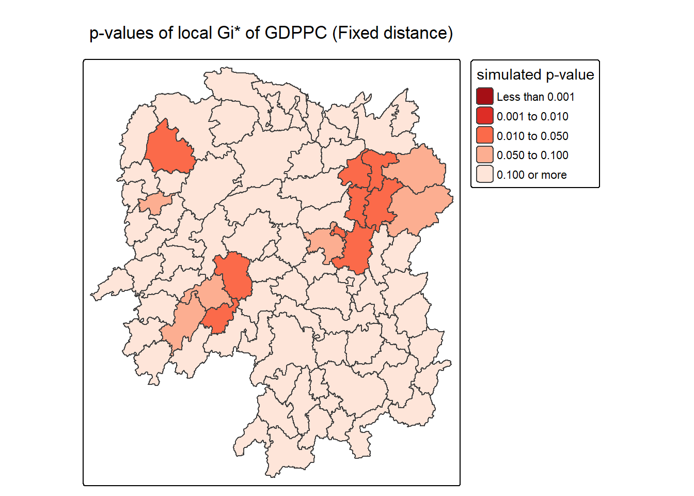
8.3.3 Mapping both Gi* values and p-values
For effective interpretation, it is better to plot both the Gi* values map and its corresponding p-values map next to each other.
The code chunk below will be used to create such visualisation.
Gi_star_map <- tm_shape(HCSA_fdw) +
tm_polygons(fill = "gi_star",
fill.scale = tm_scale_intervals(
style = "pretty",
n = 5,
values = "-brewer.rd_bu"),
fill.legend = tm_legend(
title = "local Gi*",
position = tm_pos_in(
"left", "bottom"))) +
tm_borders(fill_alpha = 0.5) +
tm_title("Local Gi* of GDPPC")
p_values_map <- tm_shape(HCSA_fdw) +
tm_polygons(fill = "p_sim",
fill.scale = tm_scale_intervals(
breaks = c(0, 0.001, 0.01, 0.05, 0.1, 1),
values = "-brewer.reds"),
fill.legend = tm_legend(
title = "p-value",
position = tm_pos_in("left", "bottom")
)) +
tm_borders(fill_alpha = 0.5) +
tm_title("p-values of local Gi* of GDPPC (fixed distance)")
tmap_arrange(Gi_star_map, p_values_map, asp=1, ncol=2)[scale] tm_polygons:() the data variable assigned to 'fill' contains positive and negative values, so midpoint is set to 0. Set 'midpoint = NA' in 'fill.scale = tm_scale_intervals(<HERE>)' to use all visual values (e.g. colors)[plot mode] fit legend/component: Some legend items or map compoments do not
fit well, and are therefore rescaled.
ℹ Set the tmap option `component.autoscale = FALSE` to disable rescaling.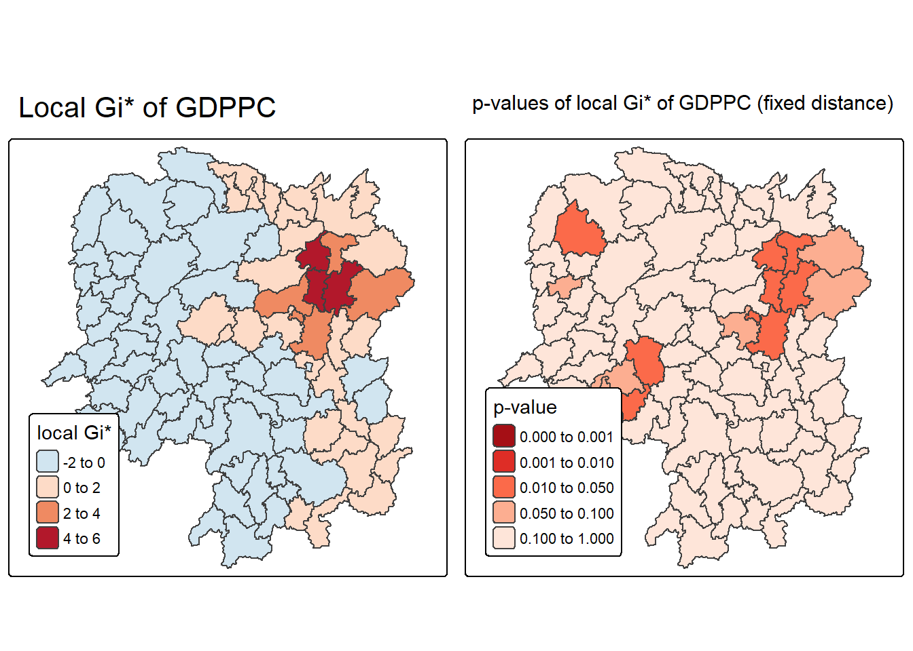
8.3.4 Plotting and visualising HCSA Map
By default, the HCSA classes are stored in cluster field of HCSA_fdw sf data frame. To prepare the HSCA map, we will derive a new field called HCSA_cluster from cluster field by using the code chunk below.
HCSA_fdw <- HCSA_fdw %>%
mutate(HCSA_cluster = case_when(
p_sim > 0.05 ~ "Insignificant",
p_sim <= 0.05 & cluster == "High" ~ "Hot spot",
p_sim <= 0.05 & cluster == "Low" ~ "Cold spot",
TRUE ~ "Other"),
HCSA_cluster = factor(
HCSA_cluster,
levels = c("Insignificant", "Hot spot", "Cold spot")
),
.before = 1
)Note Notice that a new class called Insignificant has been added for records whereby p_sim > 0.05.
Now, we can plot the HCSA map by using the code chunk below.
HCSA_map <- tm_shape(HCSA_fdw) +
tm_polygons(
fill = "HCSA_cluster",
fill.scale = tm_scale_categorical(
values = c(
"grey80", # Insignificant
"red", # Low-Low
"blue" # High-High
)
),
fill.legend = tm_legend(
title = "HSCA Cluster",
position = tm_pos_in("left", "bottom"))
) +
tm_borders() +
tm_title("HCSA Clusters (p < 0.05)")
HCSA_map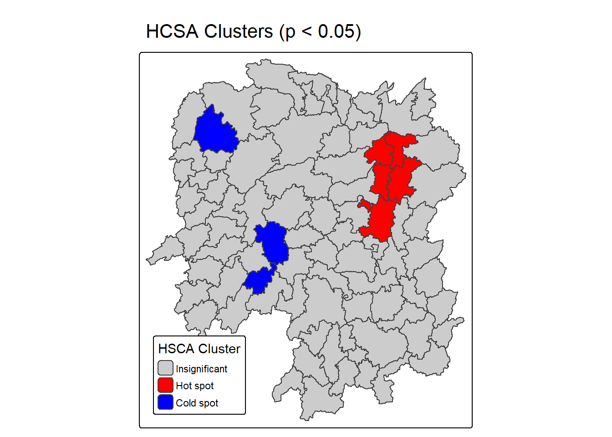
For effective interpretation, it is better to plot both the local Gi* values map and its corresponding HCSA map next to each other.
The code chunk below will be used to create such visualisation.
tmap_arrange(Gi_star_map, HCSA_map, asp=1, ncol=2)[scale] tm_polygons:() the data variable assigned to 'fill' contains positive and negative values, so midpoint is set to 0. Set 'midpoint = NA' in 'fill.scale = tm_scale_intervals(<HERE>)' to use all visual values (e.g. colors)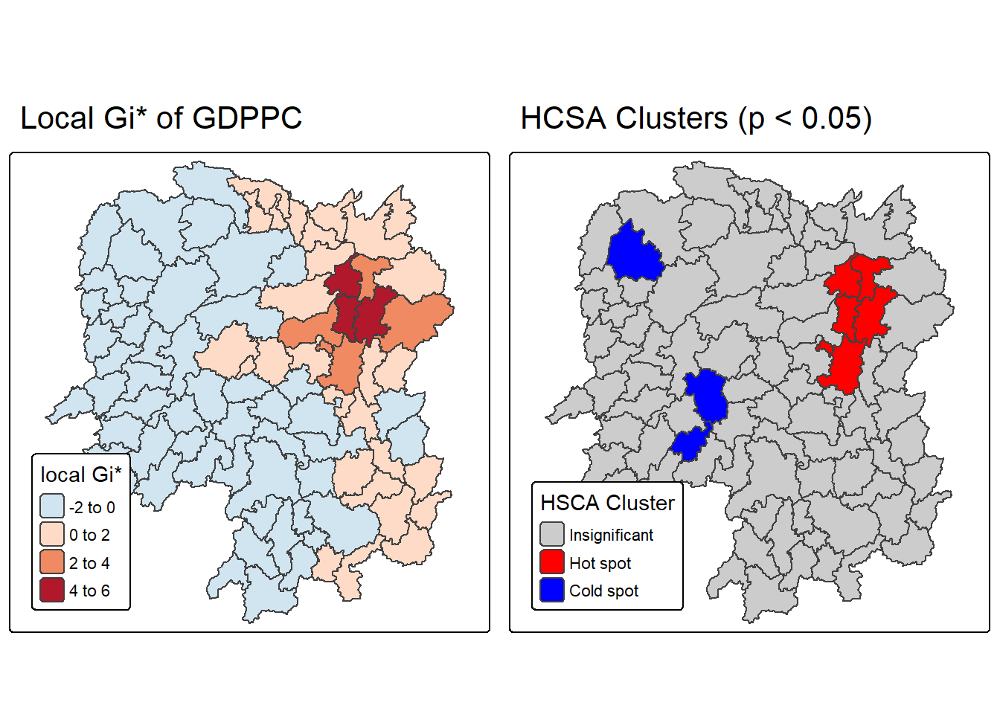